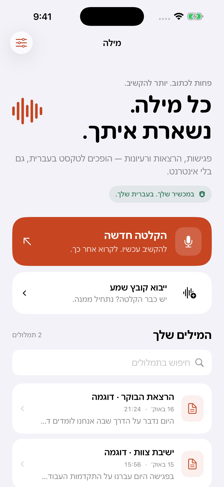
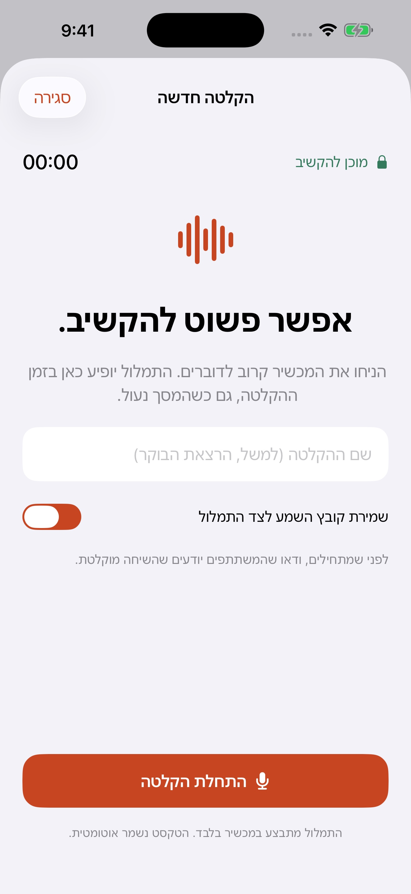
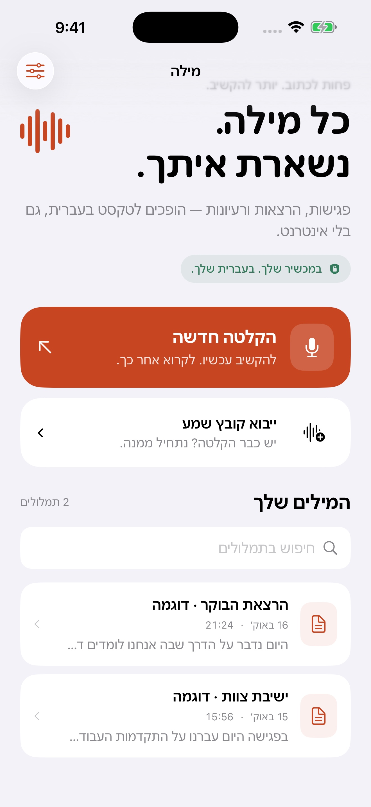
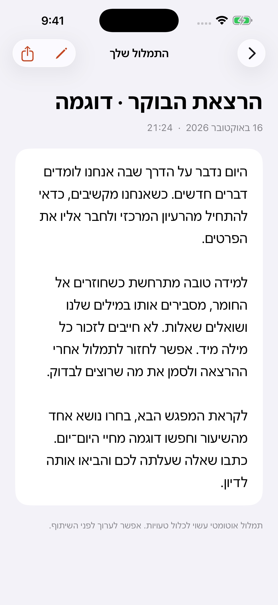
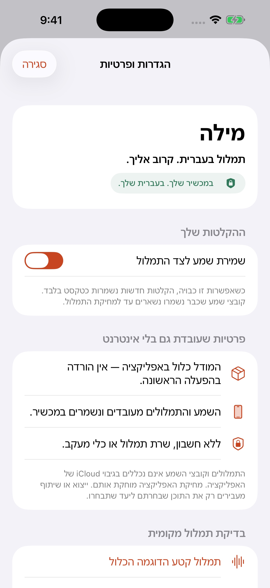
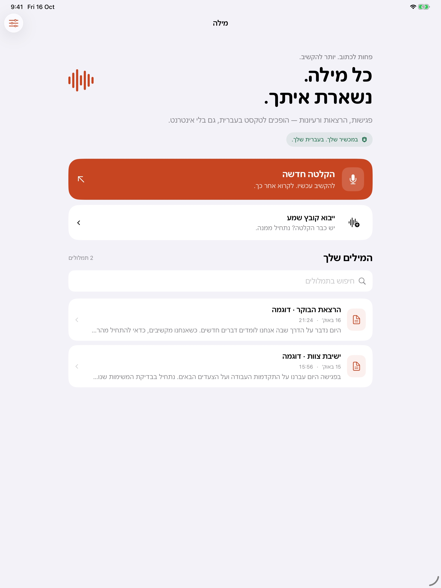
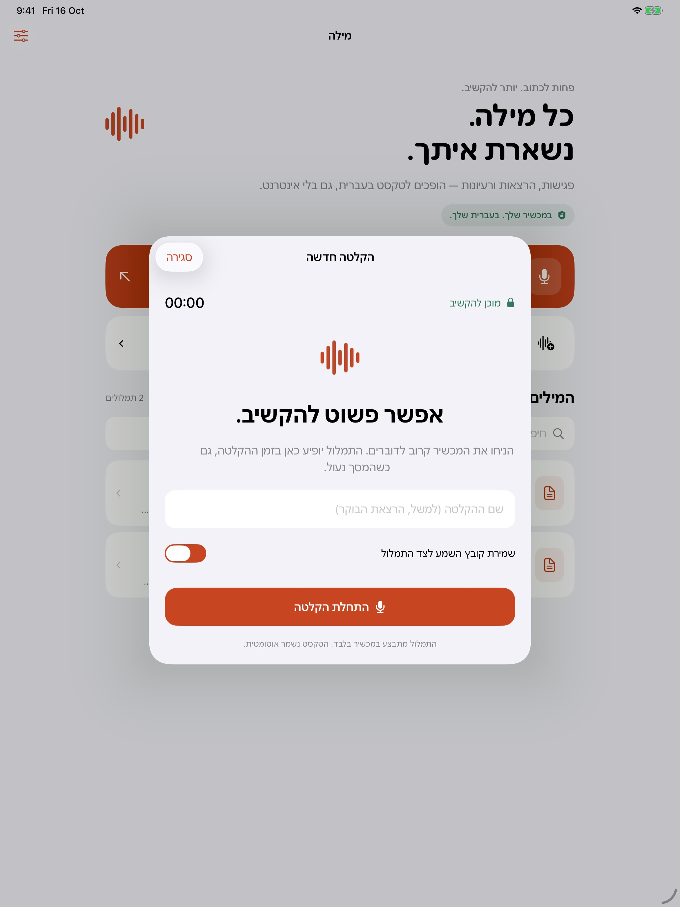
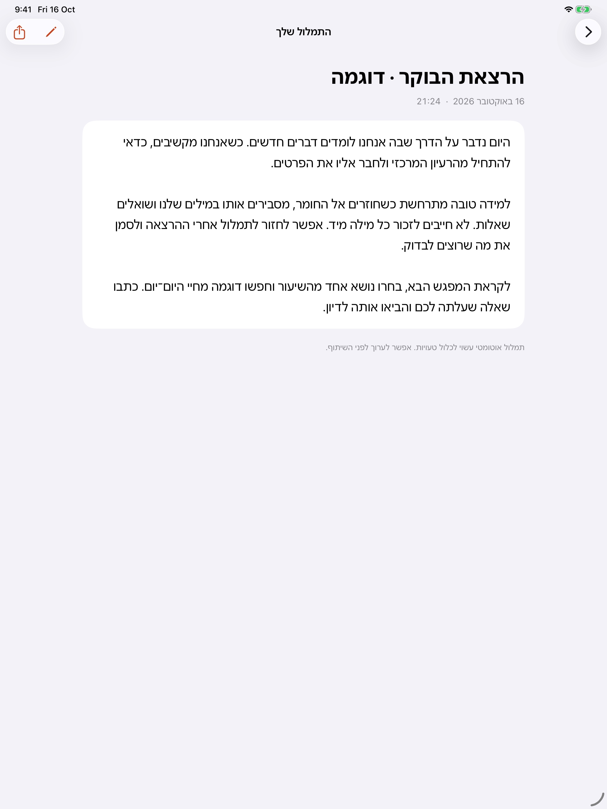
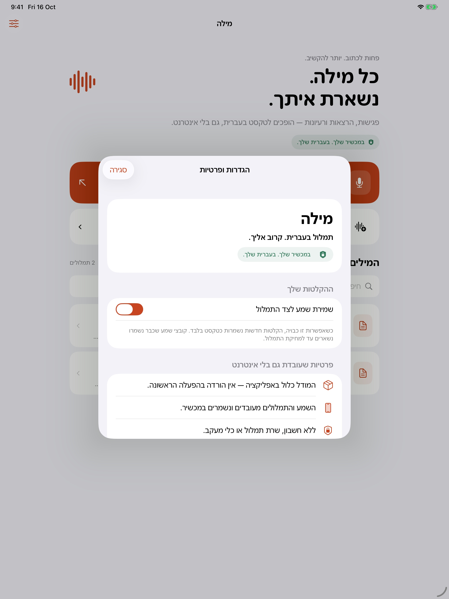

מילה - תמלול בעברית
הוגש לסקירה · WAITING_FOR_REVIEW
תשע תמונות מסך, תיאור בעברית ובאנגלית, אייקון, הנחיות לסקירה וטיוטות תמיכה ופרטיות.
אייפון

01-home
02-recording
03-library
04-transcript
05-privacyאייפד

01-home
02-recording
04-transcript
05-privacyתיאור בעברית
פחות לכתוב. יותר להקשיב.
מילה הופכת פגישות, הרצאות והקלטות לטקסט בעברית — ישירות באייפון ובאייפד, גם בלי אינטרנט.
המודל כלול באפליקציה
אין צורך להוריד מודל בהפעלה הראשונה, ליצור חשבון או לשלוח את ההקלטה לשרת תמלול. אפשר להתחיל להשתמש גם במצב טיסה.
מקליטים ורואים את המילים
הקליטו פגישה, שיעור או רעיון. התמלול מתעדכן בזמן ההקלטה ונשמר אוטומטית. הקלטת מיקרופון יכולה להימשך גם כשהמסך נעול.
כבר יש לכם הקלטה?
פתחו קובץ שמע במילה והתמלול יתחיל אוטומטית. אפשר גם לייבא קובץ דרך בורר הקבצים. התמיכה בשיתוף תלויה באפליקציה שממנה נשלח הקובץ ובפורמט השמע.
כל המילים במקום אחד
חפשו בתמלולים, ערכו את הטקסט ואת הכותרת, העתיקו או שתפו טקסט וייצאו קובץ TXT. אפשר לשמור גם את השמע לצד התמלול ולהאזין לו בהמשך.
מתאים לאייפון שלכם
ממשק בעברית ומימין לשמאל, פעולות בקיצורי דרך ופעילות הקלטה במסך הנעילה וב-Dynamic Island במכשירים תומכים.
הפרטיות נשארת קרובה
השמע והתמלולים מעובדים ונשמרים במכשיר. ללא חשבון, פרסומות או כלי מעקב באפליקציה. הנתונים אינם נכללים בגיבוי iCloud של האפליקציה; שמרו עותק באמצעות ייצוא אם תרצו להעביר אותם למכשיר אחר.
כדי להתחיל, בחרו הקלטה חדשה או ייבוא קובץ שמע. רק הקלטה חדשה דורשת הרשאת מיקרופון.
חשוב לדעת: תמלול אוטומטי עשוי לכלול טעויות. המודל מותאם לעברית; מילים בשפות אחרות ומספרים עשויים להיות פחות מדויקים. מילה אינה מסכמת, מזהה דוברים או מוסיפה פיסוק אוטומטי. תמלול קובץ ארוך צריך להמשיך באפליקציה הפתוחה. לפני הקלטת אחרים, ודאו שהם יודעים שהשיחה מוקלטת.
נדרש iOS 17 ומעלה.
הדוגמאות בתמונות נכתבו לצורכי המחשה. גרסה 1.0 הוגשה לסקירת Apple. האפליקציה חינמית וזמינה בכל המדינות, עם פרסום ידני לאחר האישור.